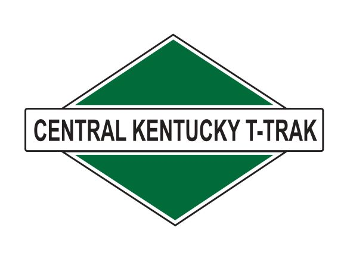
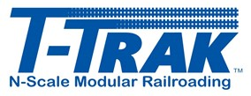

The Central Kentucky T-Trak group is not a formal group. It consists of people in the Louisville, Kentucky area who model N Scale T-Trak.
Sometimes, we get together at people's houses to run on the modules. But most of the time, we go to shows with some or all of our modules to hang out with the public and to promote N Scale in general and T-Trak in particular.
Since we are not a formal club, we do not charge membership fees. All we request you do is to make a T-Trak module and hopefully be able to attend shows. That plus be nice to people and respect other members' properties.
T-Trak is an international module standard started in Japan and adapted to the United States/Rest of The World in 2000.
The modules are simple to build with wood or other products, are easy to carry, and easy to set up since they are designed to be on table tops.
For more information check out our Links page.
Okay, I have to cheat here. Taking inspiration from President Kennedy's Inauguration Speech, I want to say "Ask not what T-Trak can do for you, ask what you can do for T-Trak"
Here are some things I believe can be done using T-Trak module specifications, especially in N Scale: